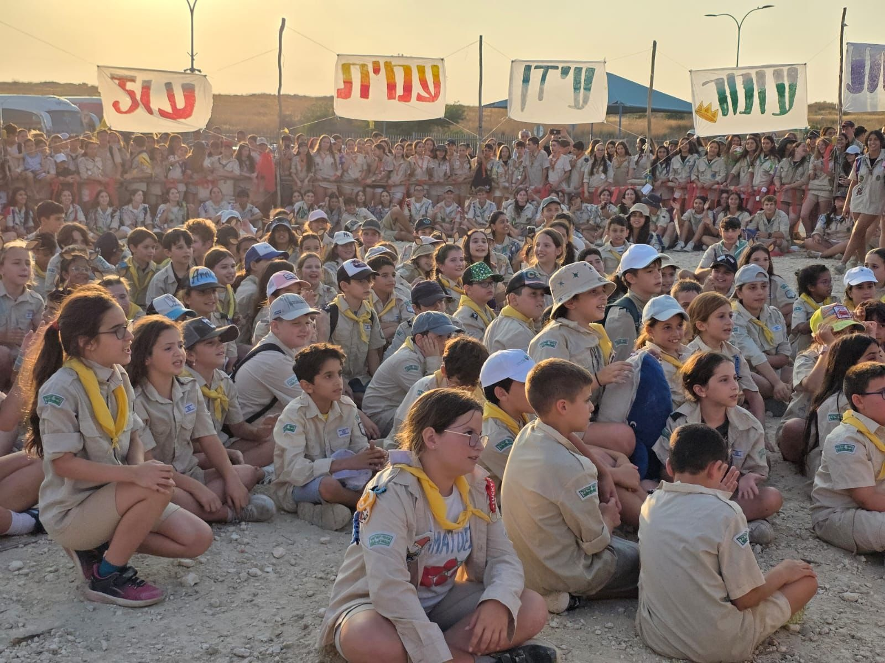
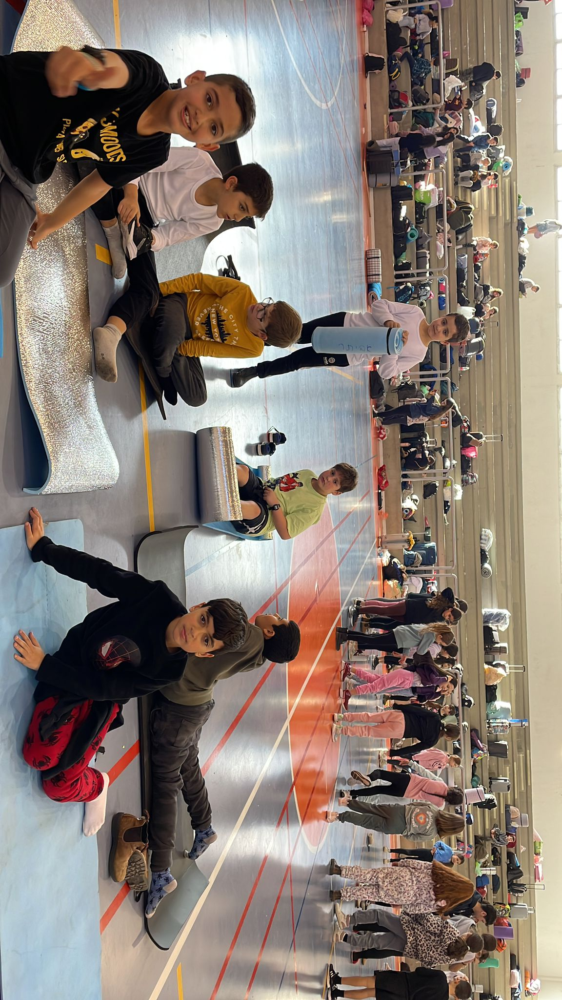
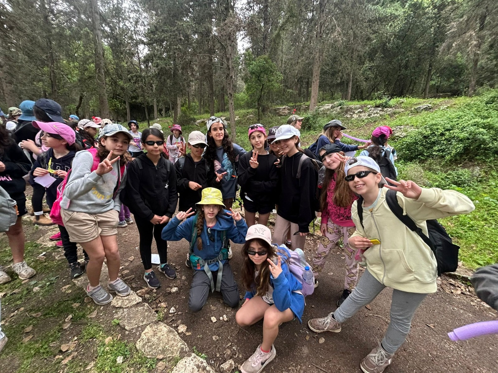
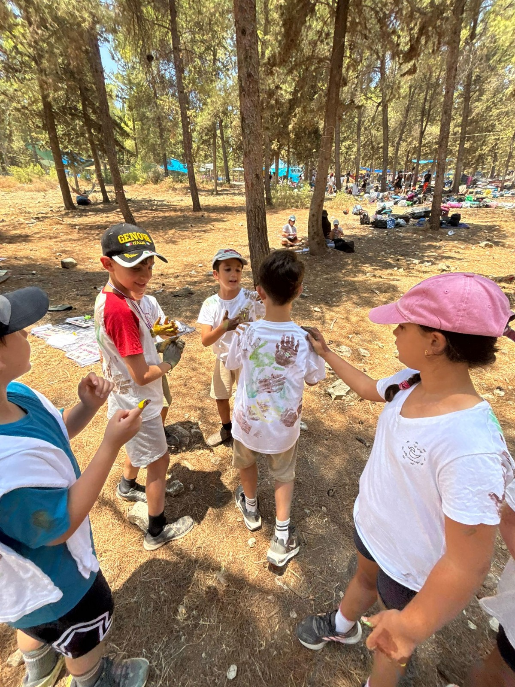

טיול פתי"ש – טיול פתיחת שנה
טיול פתיחת שנה בשבט. החניכים יוצאים למסלול עם לילה (מלבד שכבת ד׳ שיוצאת ליום אחד). מטרת הטיול היא להכיר את המדריכים ואת הקבוצה, ליצור גיבוש ולהתכונן לשנה בצופים.
במהלך הטיול שמים דגש על מטרות וציפיות לשנה ועוברים תכנים מהנים תוך כדי מסלול שמותאם לגיל. בסיום הטיול כל חניכי השבט מקבלים את העניבה לשנה הבאה: ד׳ – צהוב, ה׳ – צהוב פס כחול, ו׳ – כחול, ז׳ – כתום, ח׳ – כתום פס ירוק, גדוד רעות – ירוק פס סגול.
סמינר שכבות
סמינר המתקיים במודיעין, בו השבט מתחלק לפי שכבות וישנים באולם בעיר. הסמינר שם דגש על גיבוש בין חניכי השכבה ובין השכבות.
במהלך הסמינר מועברות פעולות עם תכנים ערכיים החשובים לשבט, לצד פעולות כיפיות וגם עמוקות – כדי שהחניכים יצאו עם ערך מוסף משמעותי.
טיול פסח שבטי
טיול לחניכי שכבות ד׳–ו׳, לשכב״ג ולחניכי גדוד רעות (צמי״ד). הטיול נמשך יומיים וכולל לילה.
בטיול שמים דגש על הכרת הארץ דרך מסלול המותאם לגיל, ועל הקניית ערכי מדינת ישראל והציונות באמצעות פעולות ערכיות ומעשירות.
שכבות ז׳–ט׳ יוצאות לטיולים שכבתיים הנהגתיים: ז׳ – טיול חותרים, ח׳ – ים אל ים, ט׳ – טיול אתגר.
יום הצופה

טיול חד-יומי בו החניכים עוברים פעולות צופיות שמקנות מיומנויות וערכים צופיים.
ביום זה החניכים עוברים דרגה צופית לפי שכבת גילם: ד׳ – עופרים, ה׳ – נחשונים, ו׳ – משוטטים, ז׳ – חותרים, ח׳ – מבטיחים, ט׳ – סוללים.
מחנ״ק – מחנה הקיץ
מחנה הקיץ של תנועת הצופים, בו החניכים ישנים ביער מספר ימים (בהתאם לשכבת הגיל). במהלך המחנה מועברות פעולות ערכיות לצד חוויה צופית משמעותית.
המחנה מהווה סיום שנה ומדגיש פרידה מהקבוצה, מהגדוד ומהמדריכים. בסופו מתקיים “מסדר דמעות” בו נפרדים משכבת השמיניות.
במחנה מוצגים מבנים צופיים שבנו השכבות הבוגרות (י׳–י״ב), עליהם עבדו במשך חודשים – חוויה מרגשת לכל חניכי השבט.